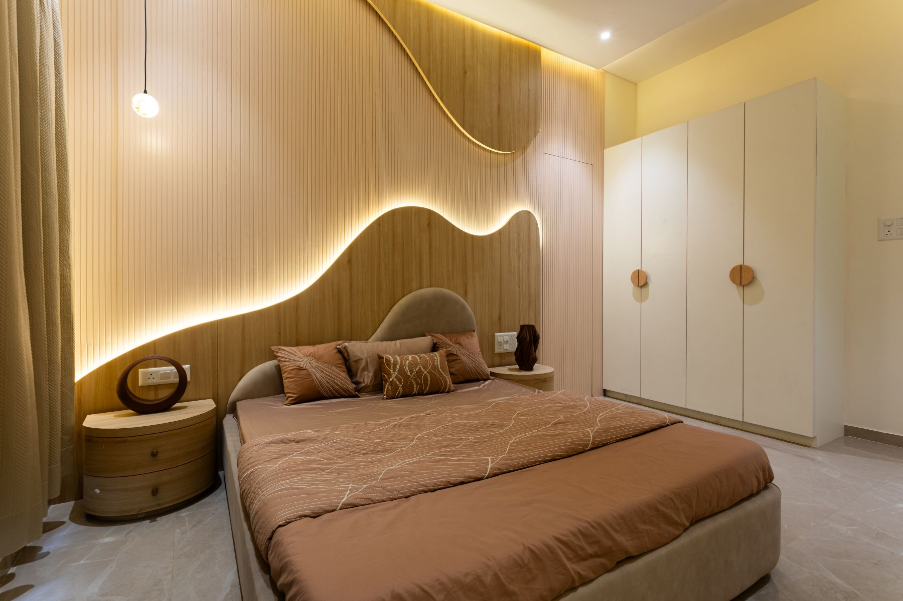

Moving In Soon? Why the 'Flat OC' is Your Ultimate Green Light

You've chosen the home, signed the agreement and watched it rise floor by floor. Before you start planning the housewarming, there's one document worth waiting for: the Occupancy Certificate.
What is an OC?
An Occupancy Certificate is issued by the local planning authority — PMC or PMRDA in most of Pune — once a building is complete and has been inspected. It confirms the building matches its sanctioned plans and meets safety rules, from fire exits to water and drainage connections.
Why it's your green light
Without an OC, a building isn't legally ready to live in. It can affect your water and electricity connections, your home-loan disbursement, property-tax registration and, later, your resale value. With it, you can move in knowing the paperwork matches the walls.
“Possession without an OC is a set of keys. Possession with one is a home.”
Three things to check
- Ask for a copy of the OC and check it names your building and wing.
- Compare the number of floors on the OC with what's actually built.
- Confirm the project's MahaRERA page shows the OC uploaded.
At Engineers Horizon, we share the OC with every family before handover — and we're happy to walk you through it line by line.